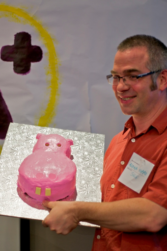
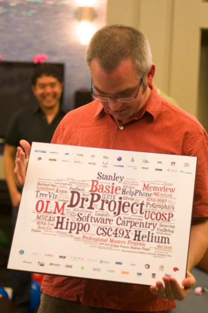
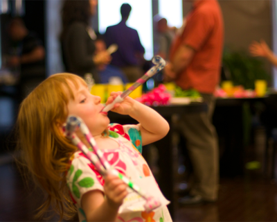

…And Thanks For All The Fish
A month ago, I gave myself a mixed performance review for my time at U of T. Turns out a few people think I deserve better: enough to scare the bejesus out of me last night when they all yelled, “Surprise!” It was one of the nicest things anyone has ever done for me, and I’m grateful to everyone for making the end of my time at the university a memory I’ll treasure for the rest of my life. So without further ado, here are the pink hippo cake:

and the plaque listing all the projects my students and I have worked on in the past seven and a half years:

and my daughter, celebrating as only a three-year-old can:

Thank you: Abayomi, Ainsley, Alecia, Amy, Andrew, Aran, Blaaaaaake, Brent, Catherine, Cordelia, both Davids, Delphine, Diane, Dominique, Ellen, Florian, GregL, Clumsy Igor, Irving, Isaac, both James, Jason, Jennifer, Jessica, Jon, Jonathan, Jorge, Justin, Karen, Kristin, Laura, Laurie, Lila, Lilian with one L, Lillian with two L’s, Luis, Madeleine, Maria, Matthew, Michelle, Mike, Miles, Misa, Pat, Rory, Sadie, Sana, Sean, Sukhmeet, Tom, Val, Veronica, Victoria, William, Zuzel, and everyone else who couldn’t be there—thank you all.
Later: so it turns out there’s video as well…